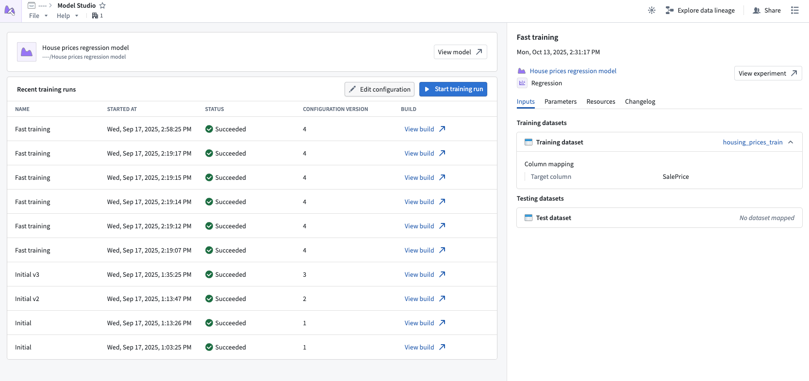

Model Studio
Model Studio is Foundry's no-code model development tool. With Model Studio, users can choose a training task, select input datasets, and optionally configure parameters to train and deploy production-grade machine learning models without writing code.

Features
- A streamlined point-and-click interface for configuring model training jobs; no coding required.
- Built-in production-grade model trainers tailored for common use cases such as time series forecasting, regression, and classification.
- Smart defaults and guided workflows that empower you get started quickly, even if you are new to machine learning.
- In-depth experiment tracking with integrated performance metrics that allow you to monitor and refine your models with confidence.
- Full data lineage and secure access controls built on top of the Palantir platform, ensuring transparency and security at every step.
Workflow
Building a model using Model Studio requires the following steps:
- Choose your model trainer: Built-in trainers are available for common modeling tasks like time series forecasting, regression, and classification.
- Provide your data: Choose the datasets to provide as training and optional testing data.
- Configure your model: Parameters are available for each trainer. You can choose to fine-tune the parameters or stick with the defaults.
- Launch the build: Launch the transform job and visualize training metrics in the experiment created at runtime.
Once model training is complete, the model can be used for inference in downstream applications like Python transforms, Pipeline Builder, functions, and shipped via Marketplace.
Model Studio training jobs can also be integrated with build schedules to automatically retrain the model whenever new data is available.
Ready to get started? See the guided tutorial or learn more about Model Studio.